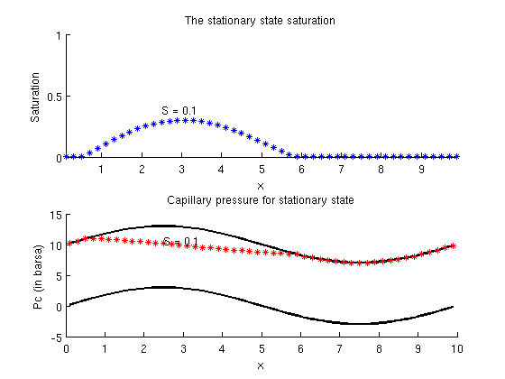
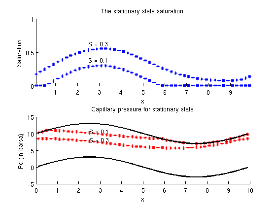
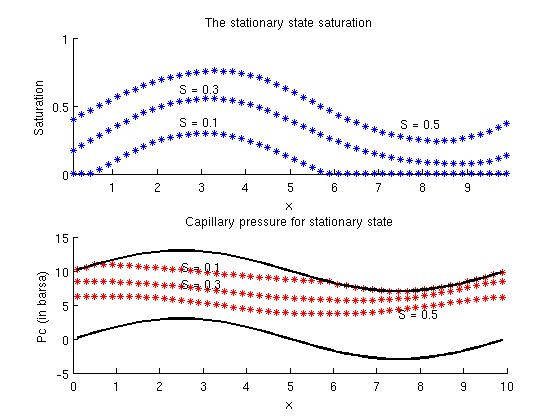
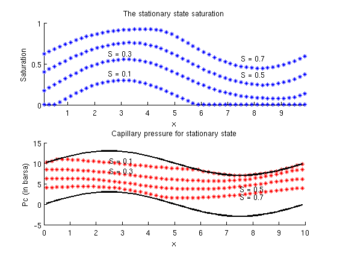
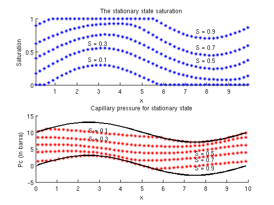
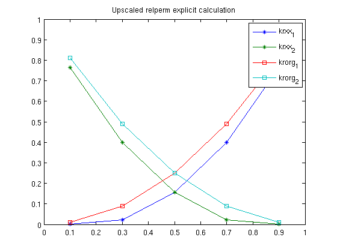

Contents
function [kr]=simpleRelpermUpscalingExample2D(perm_case,fluid_case)
This demonstrate the method used for relperm upscaling
The default setup is a quasi 1D case
warning('off','mrst:periodic_bc'); figure(3),clf if(nargin==0) perm_case='uniform'; fluid_case='periodic_capillary_pressure'; end % set up grid Lx = 10; Ly = 10; nx = 50; ny = 2; G = cartGrid([nx ny], [Lx Ly]); G = computeGeometry(G); sperm = 100; % rock=makePerm(perm_case,G); n = [2 2]; %set original exponent of fluid mu = [1 4]; %set viscosity of fluids [fluid_pure,fluid,fluid_nc] = makeFluids(fluid_case,rock,G,Lx,Ly,'n',n,'mu',mu); dp_scale = 4*barsa; dpx = dp_scale; dpy = 0.0; % set the saturations to be upscaled sat_vec = 0.1:0.2:0.9; %%%%%%%%%%%%%%%%%%%%%%%%%%%%%%%%%%%%%%%%%%%%%%%%%%%%%%%%%%%%%%%%%%%%%%%%%% % Upscale using MRST upscaling %%%%%%%%%%%%%%%%%%%%%%%%%%%%%%%%%%%%%%%%%%%%%%%%%%%%%%%%%%%%%%%%%%%%%%%%% [sat_mat, kr, perm, krK] = upscaleRelperm(G, rock, fluid, dp_scale,... sat_vec, 'periodic', true, 'dir', 1) % plot the result figure(1),clf plot(sat_mat,[kr{1}(:,[1,4]),kr{2}(:,[1,4])],'*-') legend('krxx_1','kryy_1','krxx_2','kryy_2') xlabel('S') ylabel('kr') axis([0 1 0 1]) title('Upscaled relperm from mrst') %%%%%%%%%%%%%%%%%%%%%%%%%%%%%%%%%%%%%%%%%%%%%%%%%%%%%%%%%%%%%%%%%%%%%%%%%%% % Start example of upscaling %%%%%%%%%%%%%%%%%%%%%%%%%%%%%%%%%%%%%%%%%%%%%%%%%%%%%%%%%%%%%%%%%%%%%%%%%%% % define pressure drop bl=pside([],G,'LEFT',0); br=pside([],G,'RIGHT',0); bd=pside([],G,'BACK',0); bu=pside([],G,'FRONT',0); % find boundary cells which are used to calculate fluxes cells_r=sum(G.faces.neighbors(br.face,:),2); %cells_u=sum(G.faces.neighbors(bu.face,:),2); % make periodic grid [Gp,bcp]=makePeriodicGridMulti(G,{bl,bd},{br,bu},{dpx,dpy}); Trans = computeTrans(G,rock); Transp = Trans(Gp.cells.faces(:,end)); phase_fluxkr = nan(numel(sat_vec),2); lambda = @(s) bsxfun(@rdivide,fluid.relperm(s),fluid.properties()); % initialize state and calculate trivial upscaling state = initResSol(Gp, 100*barsa, 1); state = incompTPFA(state,Gp,Transp,fluid_pure,'bcp',bcp); x_faces = bcp.face(bcp.value==dpx); %y_faces=bcp.face(bcp.value==dpy); sign_x = 2*(Gp.faces.neighbors(x_faces,1)==cells_r)-1; %sign_y=2*(Gp.faces.neighbors(y_faces,2)==cells_u)-1; tflux_x = sum(state.flux(x_faces).*sign_x); %tflux_y=sum(state.flux(y_faces).*sign_y); tflux = tflux_x; permkr = (tflux/Ly)/(dpx/Lx); DT = 100*day; % set up parmeter used in the uspcaling lop max_DT = 40*year; max_it = 40; diff_tol = 1e-4; %%%%%%%%%%%%%%%%%%%%%%%%%%%%%%%%%%%%%%%%%%%%%%%%%%%%%%%%%%%%%%%%%%%%%%%%%%% % Start loop for finding upcaled relperm %%%%%%%%%%%%%%%%%%%%%%%%%%%%%%%%%%%%%%%%%%%%%%%%%%%%%%%%%%%%%%%%%%%%%%%%%%% state=initResSol(Gp, 100*barsa, 0.1); pv=poreVolume(G,rock); for i=1:numel(sat_vec);
sat=sat_vec(i); % errir ub treatment of boundary conditions %fl_sat=lambda(sat); %fl_sat=fl_sat(:,1)/sum(fl_sat,2); % make initial saturation to for the statoinary state calculation eff_sat=sum(state.s.*pv)./sum(pv); if(eff_sat > 0 ) state.s=state.s*(sat/eff_sat); else state.s=ones(size(state.s))*sat; end state.s=ones(size(state.s))*sat;
search for stationary state
init_state=state; it=0; stationary=false; %%%%%%%%%%%%%%%%%%%%%%%%%%%%%%%%%%%%%%%%%%%%%%%%%%%%%%%%%%%%%%%%%%%%%%%%%%% % Start loop for finding stationary state %%%%%%%%%%%%%%%%%%%%%%%%%%%%%%%%%%%%%%%%%%%%%%%%%%%%%%%%%%%%%%%%%%%%%%%%%%% % find a flux assosiated with the pressure drop state=incompTPFA(state,Gp,Transp,fluid_nc,'bcp',bcp); while ~stationary && it < max_it s_pre=state.s; % do one transport step [state,report]=implicitTransport(state,Gp,DT,rock,fluid,'Trans',Transp,... 'verbose',false,... 'nltol' , 1.0e-6, ... % Non-linear residual tolerance 'lstrials', 10 , ... % Max no of line search trials 'maxnewt' , 20 , ... % Max no. of NR iterations 'tsref' , 4 , ... % Time step refinement 'init_state',init_state); disp(['Iteration ',num2str(it),' DT ', num2str(DT/year),' Error ', num2str(norm(s_pre-state.s))]) % check if transport step is successfull if(report.success) init_state=state; % increas timestep if change is small if(norm(s_pre-state.s,inf)<1e-2) DT=min(max_DT,DT*2); end % calculate new pressure state=incompTPFA(state,Gp,Transp,fluid,'bcp',bcp); if(norm(s_pre-state.s,inf)<diff_tol) stationary=true; end else % if not success full cut time step disp('Cutting time step'); init_state.s=0.5*ones(size(state.s)); DT=DT/2; end it=it+1; end
Iteration 0 DT 0.27397 Error 1.0617 Iteration 1 DT 0.27397 Error 0.08929 Iteration 2 DT 0.27397 Error 0.017507 Iteration 3 DT 0.54795 Error 0.0073307 Iteration 4 DT 1.0959 Error 0.0034994 Iteration 5 DT 2.1918 Error 0.0016908 Iteration 6 DT 4.3836 Error 0.0008316 Iteration 7 DT 8.7671 Error 0.0004104
Iteration 0 DT 17.5342 Error 1.5157 Iteration 1 DT 17.5342 Error 0.52006 Iteration 2 DT 17.5342 Error 0.2363 Iteration 3 DT 17.5342 Error 0.11704 Iteration 4 DT 17.5342 Error 0.056809 Iteration 5 DT 35.0685 Error 0.027929 Iteration 6 DT 40 Error 0.013658 Iteration 7 DT 40 Error 0.0066975 Iteration 8 DT 40 Error 0.0032799 Iteration 9 DT 40 Error 0.0016073 Iteration 10 DT 40 Error 0.00078738 Iteration 11 DT 40 Error 0.00038578
Iteration 0 DT 40 Error 1.6551 Iteration 1 DT 40 Error 0.38688 Iteration 2 DT 40 Error 0.07936 Iteration 3 DT 40 Error 0.020325 Iteration 4 DT 40 Error 0.0050342 Iteration 5 DT 40 Error 0.0012582 Iteration 6 DT 40 Error 0.00031377
Iteration 0 DT 40 Error 1.6341 Iteration 1 DT 40 Error 0.18116 Iteration 2 DT 40 Error 0.001484 Iteration 3 DT 40 Error 3.2212e-05
Iteration 0 DT 40 Error 1.1408 Iteration 1 DT 40 Error 0.035346 Iteration 2 DT 40 Error 0.0017094 Iteration 3 DT 40 Error 0.00039797
Plot the stationary state
figure(3) pv=poreVolume(G,rock); sat_vec(i)=sum(pv.*state.s(:,1))/sum(pv); if(ny>2) clf,plotCellData(G,state.s),colorbar else %clf, mcells=1:nx; subplot(2,1,1),%cla hold on plot(G.cells.centroids(mcells,1),state.s(mcells),'*') axis([min(G.cells.centroids(:,1)) max(G.cells.centroids(:,1)), 0 1]) ylabel('Saturation') xlabel('x'); %title(['The stationary saturation for average saturation', num2str(sat_vec(i))]) title('The stationary state saturation') if(sat_vec(i)<0.5) ind=floor(numel(mcells)/4)+1; text(G.cells.centroids(ind,1),state.s(ind,1)+0.1,['S = ', num2str(sat_vec(i))]) else ind=floor(3*numel(mcells)/4)+1; text(G.cells.centroids(ind,1),state.s(ind,1)+0.1,['S = ', num2str(sat_vec(i))]) end subplot(2,1,2),%cla hold on % calculate capillary pressure for plotting mpc=fluid.pc(state); % calculate capillary pressure if saturation is zero or one mpc0=fluid.pc(struct('s',zeros(G.cells.num,1))); mpc1=fluid.pc(struct('s',ones(G.cells.num,1))); plot(G.cells.centroids(mcells,1),mpc0(mcells)/barsa,'k','LineWidth',2) plot(G.cells.centroids(mcells,1),mpc(mcells)/barsa,'r*') plot(G.cells.centroids(mcells,1),mpc1(mcells)/barsa,'k','LineWidth',2) ylabel('Pc (in barsa)') xlabel('x'); %title(['Capillary pressure for stationary state with average saturation', num2str(sat_vec(i))]) title(['Capillary pressure for stationary state']) if(sat_vec(i)<0.5) ind=floor(numel(mcells)/4)+1; text(G.cells.centroids(ind,1),mpc(ind,1)/barsa+0.5,['S = ', num2str(sat_vec(i))]) else ind=floor(3*numel(mcells)/4)+1; text(G.cells.centroids(ind,1),mpc(ind,1)/barsa-0.5,['S = ', num2str(sat_vec(i))]) end %axis([min(G.cells.centroids(:,1)) max(G.cells.centroids(:,1)), 0 1]) end drawnow; % calculate new correct fluxes state=incompTPFA(state,Gp,Transp,fluid,'bcp',bcp); % store if the upscaling has been success full or not if(~stationary) sim_ok(i)=false;%#ok else sim_ok(i)=true;%#ok end % do single phase upscaling solves to find Kkr lam= lambda(state.s); Ts={};rocks={};states={}; for kk=1:2; rocks{kk}.perm=rock.perm.*lam(:,kk);%#ok Ts{kk} = computeTrans(G,rocks{kk});%#ok TT=Ts{kk}(Gp.cells.faces(:,3)); TT(TT==0)=1e-6*max(TT); states{kk}=incompTPFA(state,Gp,TT,fluid_pure,'bcp',bcp); %#ok end phase_fluxkr(i,:)=[sum(states{1}.flux(x_faces).*sign_x),sum(states{2}.flux(x_faces).*sign_x)]; disp(['Saturation ',num2str(sat)])
Saturation 0.1
Saturation 0.3
Saturation 0.5
Saturation 0.7
Saturation 0.9
end
Warning: Matrix is close to singular or badly scaled. Results may be inaccurate. RCOND = 3.543148e-20.
Warning: Matrix is close to singular or badly scaled. Results may be inaccurate. RCOND = 3.543148e-20.
sat_mat =
0.1000
0.3000
0.5000
0.7000
0.8693
kr =
[5x4 double]
[5x4 double]
perm =
1.0e-13 *
0.9869 -0.0000
-0.0000 0.9869
krK =
[5x4 double]
[5x4 double]
mu = fluid.properties(); upperm=permkr; % compare the upscaled permeability with the original disp(['Upscaled perm is ', num2str(upperm/(milli*darcy)),... ' input was ', num2str(sperm)])
Upscaled perm is 100 input was 100
plot the upscaled relperms.
the result below depend on that upscaled permeability is scalar
figure(2) ir_up=bsxfun(@rdivide,bsxfun(@times,phase_fluxkr,mu),(upperm*dpx*Ly/Lx)); %clf,plot(sat_vec,ir_up,'bx-',sat_vec,fluid.relperm(sat_vec')','r'); clf,plot(sat_vec,ir_up,'*-',sat_vec,fluid.relperm(sat_vec')','s-'); legend('krxx_1','krxx_2','krorg_1','krorg_2') hold on plot(sat_vec(~sim_ok),ir_up(~sim_ok,:),'ro') axis([0 1 0 1]) title('Upscaled relperm explicit calculation') disp(['Upscaled perm is ', num2str(permkr/(milli*darcy)),... ' should be ', num2str(sperm)]) if(ny>2) figure(3) clf,plotCellData(G,log(rock.perm/(milli*darcy))),colorbar title('permeability') end kr=[sat_vec',ir_up];
Upscaled perm is 100 should be 100
end %%%%%%%%%%%%%%%%%%%%%%%%%%%%%%%%%%%%%%%%%%%%%%%%%%%%%%%%%%%%%%%%%%%%%%%%%%% % help functions to set ups several test cases and fluid is below here %%%%%%%%%%%%%%%%%%%%%%%%%%%%%%%%%%%%%%%%%%%%%%%%%%%%%%%%%%%%%%%%%%%%%%%%%%% function rock=makePerm(perm_case,G) sperm=100*milli*darcy; switch perm_case case 'uniform' rock.poro=0.1*ones(G.cells.num,1); rock.perm=sperm*ones(G.cells.num,1); case 'random' RandStream.setDefaultStream(RandStream('mt19937ar','seed',1)); rock.perm=sperm*rand(G.cells.num,1); rock.poro=0.1*ones(G.cells.num,1); case 'brick' rock.perm=sperm*rand(G.cells.num,1); rock.poro=0.1*ones(G.cells.num,1); cell=sub2ind(G.cartDims,floor(nx/2)+1,floor(ny/2)+1); rock.perm(cell)=1e-4*rock.perm(cell); case 'chess' %RandStream.setDefaultStream(RandStream('mt19937ar','seed',1)); %rock.perm=sperm*milli*darcy*rand(G.cells.num,1); rock.perm=sperm*ones(G.cells.num,1); rock.poro=0.1*ones(G.cells.num,1); cell=sub2ind(G.cartDims,floor(nx/2)+1,floor(ny/2)+1); perm_tmp=reshape(rock.perm,G.cartDims); perm_tmp(:,1:2:end)=1e-4*perm_tmp(:,1:2:end); %perm_tmp(1:2:end,:)=1e-2*perm_tmp(1:2:end,:); rock.perm=perm_tmp(:); %rock.perm(cell)=1e-4*rock.perm(cell) case 'lognormal' RandStream.setDefaultStream(RandStream('mt19937ar','seed',1)); rock.perm=logNormLayers(G.cartDims,'std',1)*sperm; rock.poro=0.1*ones(G.cells.num,1); otherwise error('No such permability field implemented'); end end function [fluid_pure,fluid,fluid_nc]=makeFluids(fluid_case,rock,G,Lx,Ly,varargin) opt=struct('mu',[1 1],'n',[1 1]); opt=merge_options(opt,varargin{:}); fluid_pure = initSingleFluid('mu' , 1 , ... 'rho', 1); switch fluid_case case 'pc_Simple' gravity off; fluid = initSimpleFluidPc('mu' , [ 1, 1]*centi*poise , ... 'rho', [1000,1000]*kilogram/meter^3, ... 'n' , [1 1],.... 'pc_scale',-1e2*barsa); fluid_nc=fluid; case 'ps_Jscaled' n=opt.n; mu=opt.mu; fluid = initSimpleFluidJfunc('mu' , mu*centi*poise , ... 'rho', [1000,1000]*kilogram/meter^3, ... 'n' , n,.... 'surf_tension',-10*barsa/sqrt(0.1/(sperm*milli*darcy)),... 'rock',rock); fluid_nc = initSimpleFluidJfunc('mu' ,mu*centi*poise , ... 'rho', [1000,1000]*kilogram/meter^3, ... 'n' , n,.... 'surf_tension',-10*barsa/sqrt(0.1/(sperm*milli*darcy)),... 'rock',rock); case 'periodic_capillary_pressure' n=opt.n; mu=opt.mu; fluid = initSimpleFluidPeriodicPcMulti('mu' , mu*centi*poise , ... 'rho', [1000,1000]*kilogram/meter^3, ... 'n' , n,.... 'amplitude',10*barsa,... 'G',G,... 'L',[Lx,Ly]); fluid_nc=fluid; otherwise error('No such model') end end function fluid = initSimpleFluidPeriodicPcMulti(varargin) %Initialize incompressible two-phase fluid model (analytic rel-perm). % % SYNOPSIS: % fluid = initSimpleFluid('pn1', pv1, ...) % % PARAMETERS: % 'pn'/pv - List of 'key'/value pairs defining specific fluid % characteristics. The following parameters must be defined % with one value for each of the two fluid phases: % - mu -- Phase viscosities in units of Pa*s. % - rho -- Phase densities in units of kilogram/meter^3. % - n -- Phase relative permeability exponents. % % RETURNS: % fluid - Fluid data structure as described in 'fluid_structure' % representing the current state of the fluids within the % reservoir model. % % EXAMPLE: % fluid = initSimpleFluid('mu' , [ 1, 10]*centi*poise , ... % 'rho', [1014, 859]*kilogram/meter^3, ... % 'n' , [ 2, 2]); % % s = linspace(0, 1, 1001).'; kr = fluid.relperm(s); % plot(s, kr), legend('kr_1', 'kr_2') % % SEE ALSO: % fluid_structure, solveIncompFlow. %{ #COPYRIGHT# %} opt = struct('mu', [], 'rho', [], 'n', [],'amplitude',0,'G',[],'L',1); opt = merge_options(opt, varargin{:}); n_mu = numel(opt.mu); n_rho = numel(opt.rho); n_n = numel(opt.n); assert ((n_mu == 2) && (n_rho == 2) && (n_n == 2)); prop = @( varargin) properties(opt, varargin{:}); kr = @(s,varargin) relperm(s, opt, varargin{:}); pc = @(state) pc_funct(state,opt); fluid = struct('properties', prop , ... 'saturation', @(x,varargin) x.s, ... 'relperm' , kr,... 'pc' , pc); end %------------------------------------------------------------------------- function varargout = pc_funct(state,opt) ns=numel(state.s(:,1)); space_var=0.3*sin(2*pi*opt.G.cells.centroids(:,1)/opt.L(1)); varargout{1} = opt.amplitude*(space_var+(1-state.s(:,1))); if nargout > 1, varargout{2} = -repmat(opt.amplitude,ns,1); end end %-------------------------------------------------------------------------- function varargout = properties(opt, varargin) varargout{1} = opt.mu ; if nargout > 1, varargout{2} = opt.rho; end if nargout > 2, varargout{3} = [] ; end end %-------------------------------------------------------------------------- function varargout = relperm(s, opt, varargin) s1 = s(:,1); s2 = 1 - s1; varargout{1} = [s1 .^ opt.n(1), s2 .^ opt.n(2)]; if nargout > 1, null = zeros([numel(s1), 1]); varargout{2} = [opt.n(1) .* s1 .^ (opt.n(1) - 1), ... null, null , ... opt.n(2) .* s2 .^ (opt.n(2) - 1)]; end if nargout > 2, a = opt.n .* (opt.n - 1); varargout{3} = [a(1) .* s1 .^ (opt.n(1) - 2), ... a(2) .* s2 .^ (opt.n(2) - 2)]; end end function [Gp,bcp] = makePeriodicGridMulti(G,bcl,bcr,dprl) % hack due to feature of remove internal baundary ntags=size(G.cells.faces,2)-1; faces=nan(size(G.cells.faces,1),ntags+2); faces(:,[1,3:ntags+2])=G.cells.faces; faces(:,2)=[1:size(G.cells.faces,1)]'; G.cells.faces=faces; % assert it is some consitancy between the two bounaries assert(numel(bcl)==numel(bcr)) assert(numel(bcl)==numel(dprl)); rm_faces=[]; ns=[]; dp=[]; %tags=[]; cells=[]; for i=1:numel(bcl) if(i==1) d=2; elseif(i==2) d=1; else error('This only works for 2D'); end %find matiching faces if(size(G.cells.centroids,2)>1) assert(all(abs(G.faces.centroids(bcl{i}.face,d)-G.faces.centroids(bcr{i}.face,d))<1e-10)) end assert(all(abs(G.faces.areas(bcl{i}.face)-G.faces.areas(bcr{i}.face))<1e-10)) rm_faces= [rm_faces;bcl{i}.face,bcr{i}.face];%#ok ns=[ns;numel(bcl{i}.face)]; dp=[dp;dprl{i}]; %tags=[tags;repmat(i,,1)]; cells=[cells;sum(G.faces.neighbors(bcr{i}.face,:),2)]; end [Gp,f]=removeInternalBoundary(G,rm_faces); dp=rldecode(dp,ns); tags=rldecode([1:G.griddim]',ns); bcp=struct('face',f,'value',dp,'tags',tags,'sign',2*(Gp.faces.neighbors(f,1)==cells)-1,'upcells',cells); Gp.cells.faces=[Gp.cells.faces(:,1),G.cells.faces(Gp.cells.faces(:,2),3:end),Gp.cells.faces(:,2)]; Gp.cells.centroids=G.cells.centroids; Gp.faces.normals=[]; Gp.nodes.coords =[]; % remap areas of faces assume periodic boundary is made on faces with % the same area. Gp.faces.areas(Gp.cells.faces(:,1)) = G.faces.areas(G.cells.faces(Gp.cells.faces(:,end),1)); end
ans =
0.1000 0.0000 0.7658
0.3000 0.0229 0.3996
0.5000 0.1562 0.1562
0.7000 0.3996 0.0229
0.9000 0.7658 0.0000